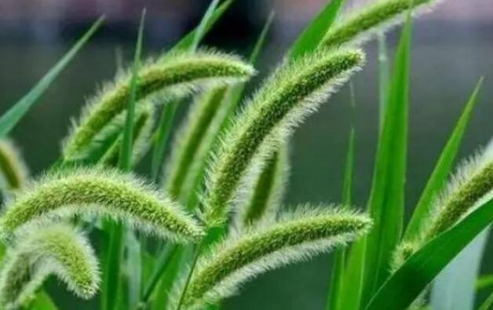

“狗尾巴草”是个宝，用它来煮水喝，或能帮助解决这4个问题
很多人都不知道，狗尾巴草又叫光明草，属于一年生长的草本植物，挺拔笔直的杆径一般都有一尺长，叶子细长。
上面还有类似于剑鞘一样的叶穗包裹在叶茎上，有芒刺。也因为它的长相和狗的尾巴有相似之处，所以被人叫作“狗尾巴草”。

狗尾草是一种很常见的的植物，公路边的草地上、乡间小路的草丛里、农田的杂草中等地方。只要是有土的地方，都有可能会有狗尾巴草的身影。
狗尾草属禾本科，无毛或疏具柔毛或疣毛，边缘具较长的密绵毛状纤，一株狗尾草可结数千至上万粒种子。
01关于狗尾巴草
【狗尾巴草的特点】
狗尾草很大的一个特点就是生命力强，适应环境性强，坚韧不放弃。不管是酸性土壤，还是碱性土壤，都可以存活，但在疏松、排水性好的基质中能长势繁茂。
并且植株喜光，生长期间要有充足的阳光，才能正常开花。很多人把它比作坚韧默默无闻的爱，现在也有很多恋人喜欢用狗尾草编制草戒，来作为私定终身的信物。
本站文章均来自互联网，仅供学习参考，如有侵犯您的版权，请邮箱联系我们删除！
 上一篇
上一篇